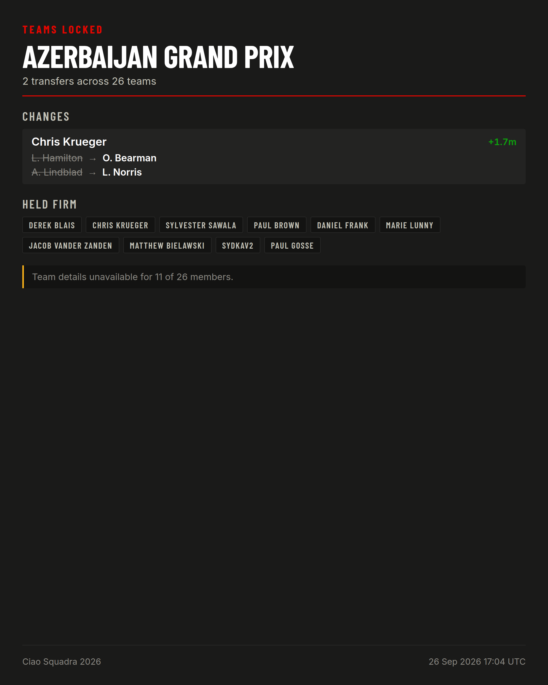
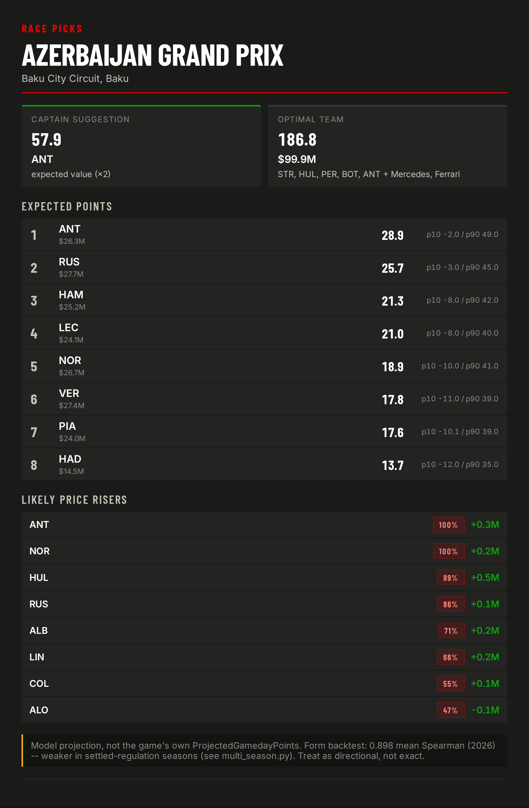
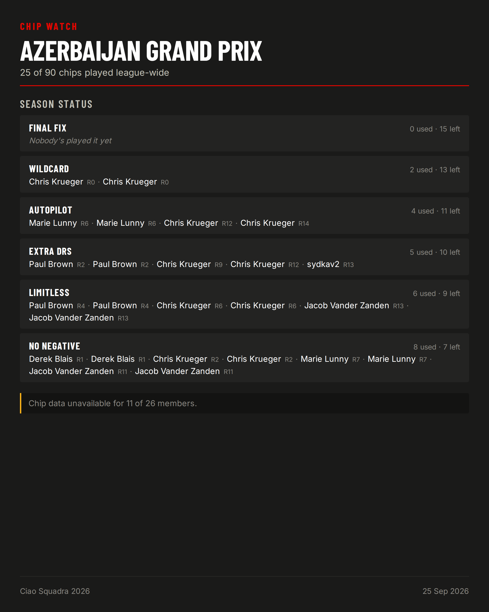
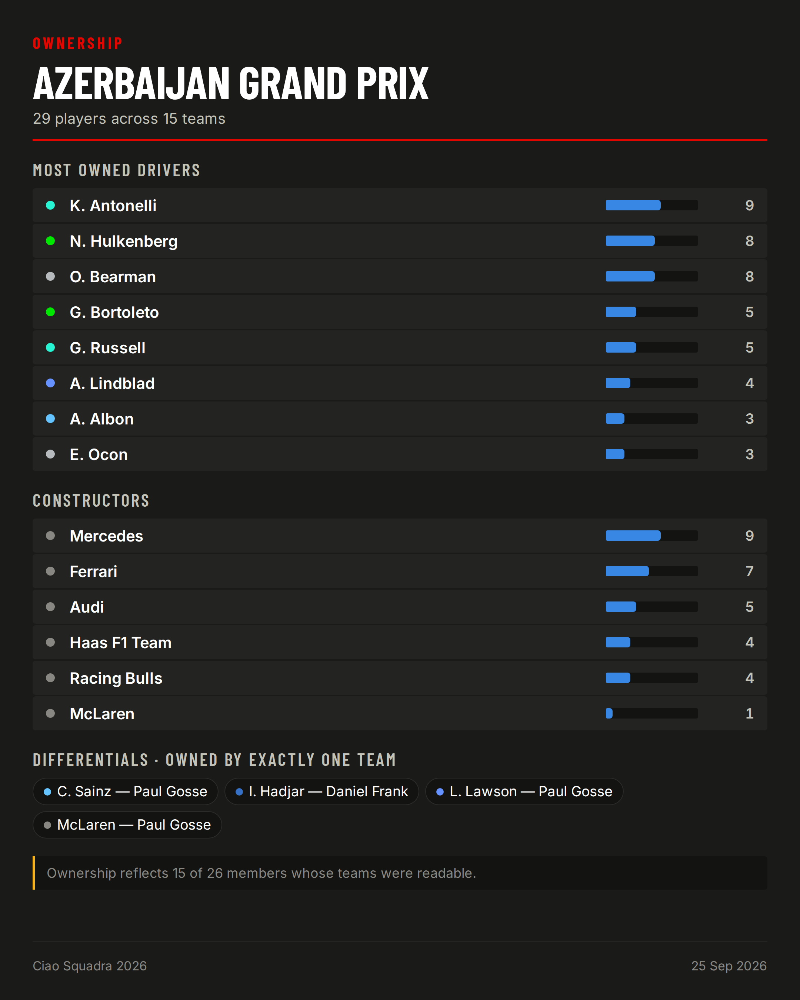
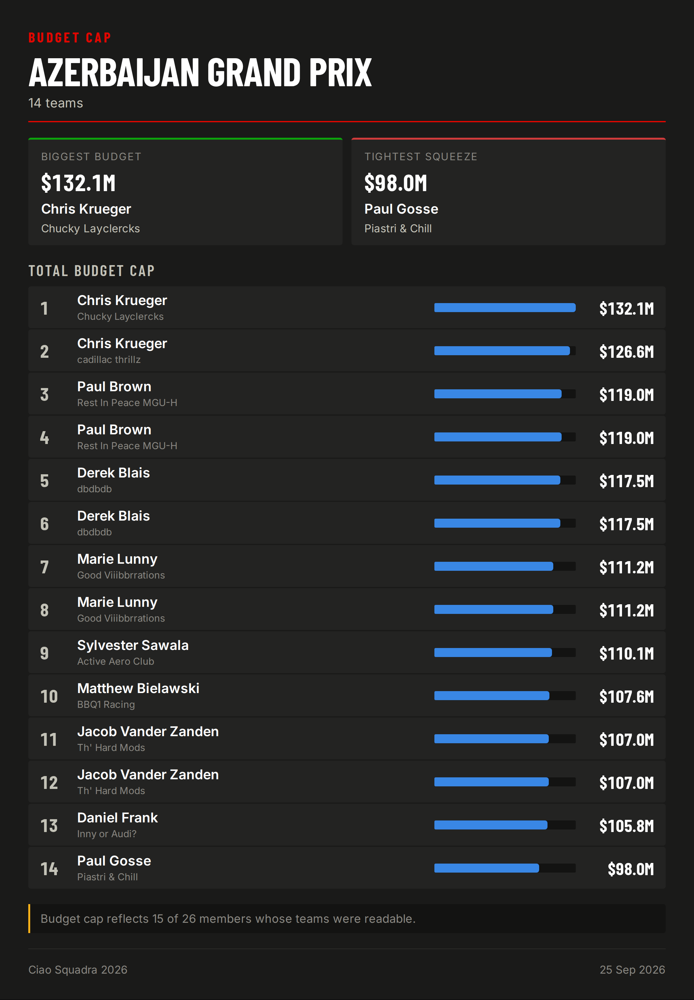
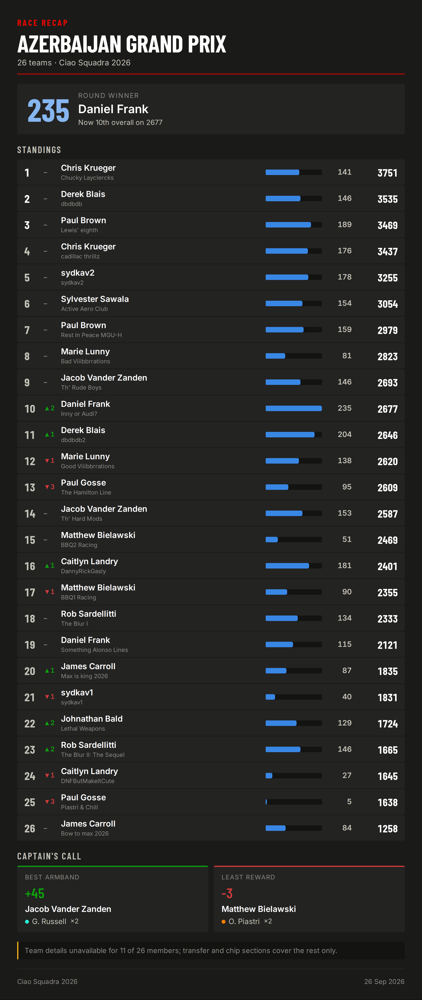
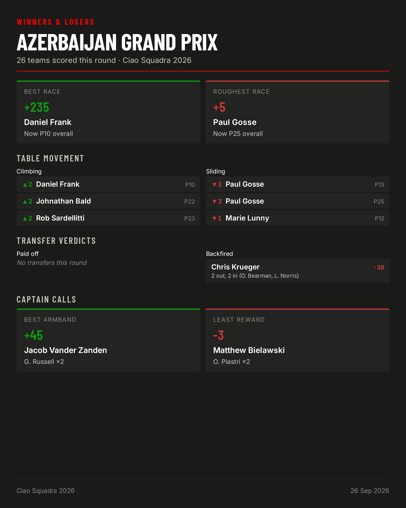
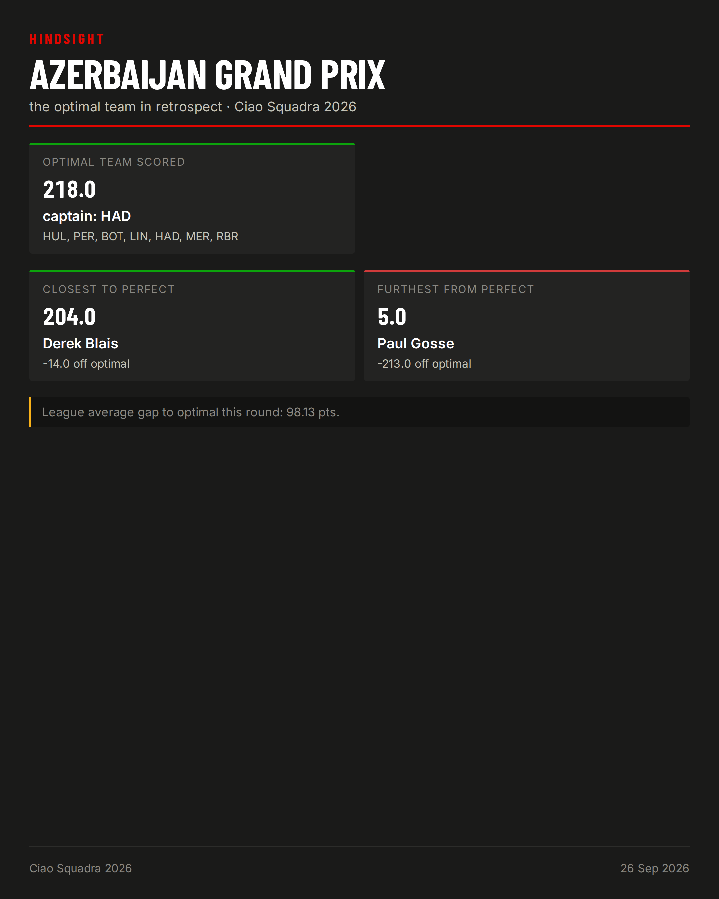

← All rounds
Deep dives
Pre-race
Teams locked

🔒 Teams are locked -- Azerbaijan Grand Prix
2 transfers across 26 teams.
🧊 Held firm: Derek Blais, Chris Krueger, Sylvester Sawala, Paul Brown, Daniel Frank, Marie Lunny, Jacob Vander Zanden, Matthew Bielawski, sydkav2, Paul Gosse
Good luck 🏎️
Picks

🏁 Race picks -- Azerbaijan Grand Prix
Baku City Circuit, Baku
📊 Top expected points:
ANT: 28.9 (p10 -2.0 / p90 49.0)
RUS: 25.7 (p10 -3.0 / p90 45.0)
HAM: 21.3 (p10 -8.0 / p90 42.0)
LEC: 21.0 (p10 -8.0 / p90 40.0)
NOR: 18.9 (p10 -10.0 / p90 41.0)
🏗️ Captain suggestion: ANT (EV 57.9)
📈 Likely price risers:
ANT: 100% (Δ+0.30M)
NOR: 100% (Δ+0.23M)
HUL: 89% (Δ+0.48M)
RUS: 86% (Δ+0.10M)
ALB: 71% (Δ+0.18M)
🧩 Optimal team: STR, HUL, PER, BOT, ANT + Mercedes, Ferrari (186.8 pts, $99.9M)
Chip watch

🎴 Chip Watch -- Azerbaijan Grand Prix
🧊 Nobody's played: Final Fix
Ownership

👥 Ownership -- Azerbaijan Grand Prix
Most owned: K. Antonelli (9/15 teams)
💎 Differentials: C. Sainz, I. Hadjar, L. Lawson, McLaren
Budget cap

💰 Budget Cap -- Azerbaijan Grand Prix
Biggest budget: Chris Krueger ($132.1M)
Tightest squeeze: Paul Gosse ($98.0M)
Post-race
Recap

🏁 Azerbaijan Grand Prix -- Ciao Squadra 2026
🥇 Round winner: Daniel Frank with 235 pts
Top 3
1. Chris Krueger — 3751
2. Derek Blais — 3535
3. Paul Brown — 3469
Winners & losers

🏆 Winners & Losers -- Azerbaijan Grand Prix
🥇 Best race: Daniel Frank (+235 pts)
📉 Roughest race: Paul Gosse (+5 pts)
💀 Worst move: Chris Krueger (-38) — 2 out, 2 in (O. Bearman, L. Norris)
🏗️ Best armband: Jacob Vander Zanden on G. Russell (+45)
Hindsight

🔮 Hindsight -- Azerbaijan Grand Prix
Optimal team scored 218 pts (captain: HAD)
Closest to perfect: Derek Blais (204 pts, -14)
Furthest from perfect: Paul Gosse (5 pts, -213)
League average gap to optimal: 98.1 pts
Model vs. actuals
Not in the walk-forward backtest yet -- run f1-fantasy points-backtest to add this round once it has raced.